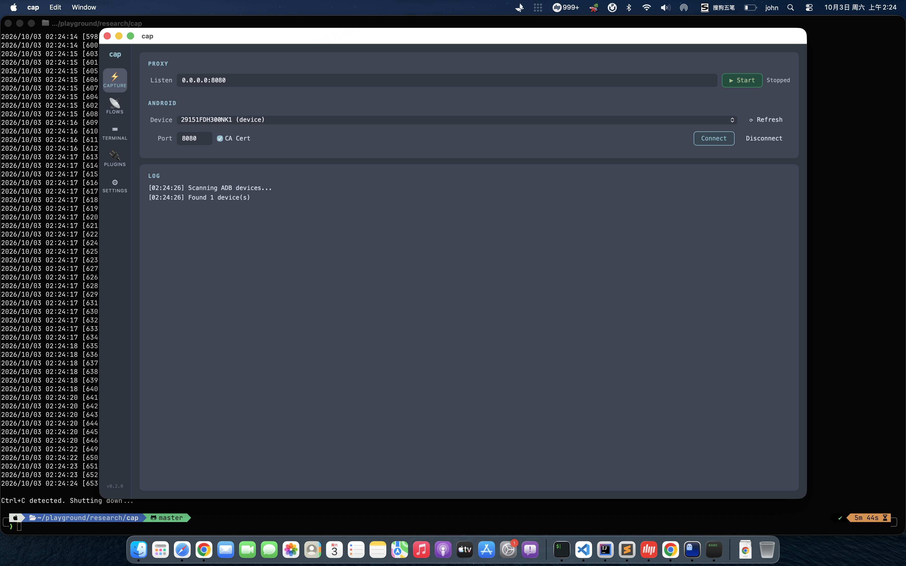
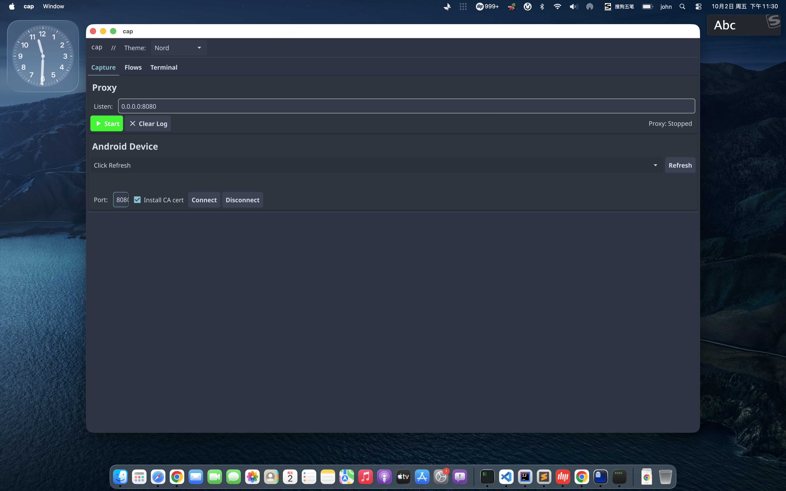

MITM proxy built for reverse engineering. LLM-ready output, multi-language codegen, sign algorithm inference, native desktop GUI.

Capture — proxy controls + Android device management

Flows — request analysis, params, code export, replay
| Capability | Burp Suite | mitmproxy | HTTP Toolkit | cap |
|---|---|---|---|---|
| CLI Automation | ✗ | ✓ | ✗ | ✓ |
| Native GUI | Java | △ basic | Electron | Fyne native |
| LLM/Agent Output | XML | HAR | HAR | Compact JSONL |
| Multi-lang Codegen | ✗ | curl+py | ✗ | 5 languages |
| Sign Detection | ✗ | ✗ | ✗ | ✓ auto |
| Sign Inference | ✗ | ✗ | ✗ | MD5/SHA/HMAC |
| Source Mapping | ✗ | ✗ | ✗ | jadx → URL |
| Android Setup | manual | manual | app | ADB direct |
| Embedded Terminal | ✗ | ✗ | ✗ | multi-tab PTY |
| Open Source | $449/yr | ✓ | core | MIT |
HTTP/HTTPS interception with auto-generated ECDSA CA. SQLite persistence with WAL mode. Noise header stripping.
cap android connect — sets proxy via ADB, injects CA cert (mount --bind / Magisk / legacy). Supports Android 7–15.
Generate runnable code from any captured request: cURL, Python requests, Go net/http, Java OkHttp3, JavaScript fetch.
Compact one-line-per-flow output. Noise stripped, sign params tagged, bodies inline. Feed directly to your coding agent.
Analyzes sign parameter values across requests. Guesses MD5/SHA1/SHA256/HMAC by length, encoding, and brute-force verification.
Scans jadx decompiled output for Retrofit annotations and OkHttp patterns. Links each captured URL to its source file and method.
Replay any captured request. Modify headers, body, URL before sending. Diff the original and replayed responses.
Capture WebSocket frames (text/binary, both directions) and Server-Sent Events streams alongside HTTP flows.
Multi-tab PTY terminal inside the GUI. Run adb, frida, curl without leaving the app. Geek-style monospace interface.
git clone https://github.com/overkazaf/cap.git
cd cap
go build -o cap ./cmd/cap
./cap --helpRequirements: Go 1.21+, macOS or Linux. GUI needs Xcode CLI tools on macOS.
# Start proxy
cap start -a 0.0.0.0:8080
# Connect Android
cap android connect
# View flows
cap flows --host api.example.com
# Export code
cap export --flow f1 --lang python
# Feed to LLM
cap export --format agent | pbcopy
# Desktop GUI
cap gui